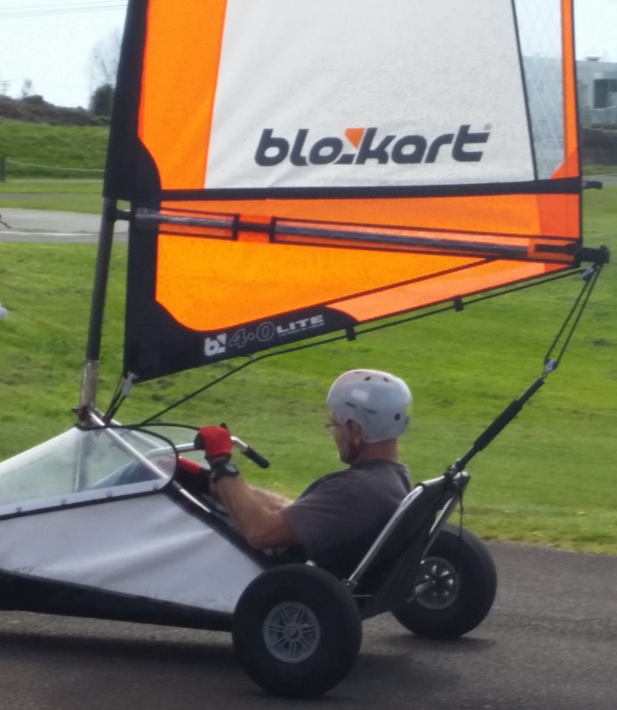

BloKart Recreational Park is home to land sailing, they offer land sailing and drift cart.

Land sailing is a lot of fun and are easy to use, even more fun when the wind is blowing.
If land sailing is too fast for you try the drift karts they are a blast and don’t require wind to move them. Both were invented in the Bay of Plenty.
Pictures and Videos BloKart and Drift KartsBloKart sailing is like go-karting but instead of an engine you have a sail to move the kart around the track. They can get pretty fast when the wind is blowing but if the kart is going to fast just loosen the rope or even let go of it and it will slow you down.
Drift karts are a three wheeled kart that is powered by an electric motor so no wind required. These karts have special rear drifting wheels that create a lot of sideways fun.